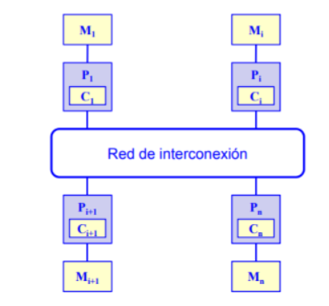
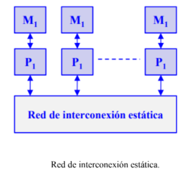

Cada procesador tiene su propia memoria y la comunicación se realiza por intercambio explícito de mensajes a través de una red.
Multiprocesadores de memoria distribuida (multicomputadores). Ventajas El número de nodos puede ir desde algunas decenas hasta varios miles (o más). La arquitectura de paso de mensajes tiene ventajas sobre la de memoria compartida cuando el número de procesadores es grande. El número de canales físicos entre nodos suele oscilar entre cuatro y ocho. Esta arquitectura es directamente escalable y presenta un bajo coste para sistemas grandes. Un problema se especifica como un conjunto de procesos que se comunican entre sí y que se hacen corresponder sobre la estructura física de procesadores. Desventajas Se necesitan técnicas de sincronización para acceder a las variables compartidas. La contención en la memoria puede reducir significativamente la velocidad. No son fácilmente escalables a un gran número de procesadores. 4.4.1 Redes de interconexión estáticas Los multicomputadores utilizan redes estáticas con enlaces directos entre nodos. Cuando un nodo recibe un mensaje lo procesa si viene dirigido a dicho nodo. Si el mensaje no va dirigido al nodo receptor lo reenvía a otro por alguno de sus enlaces de salida siguiendo un protocolo de encaminamiento.
Red de interconexión estática. Propiedades más significativas Topología de la red: determina el patrón de interconexión entre nodos. Diámetro de la red: distancia máxima de los caminos más cortos entre dos nodos de la red. Latencia: retardo de tiempo en el peor caso para un mensaje transferido a través de la red. Ancho de banda: Transferencia máxima de datos en Mbytes/segundo. Escalabilidad: posibilidad de expansión modular de la red. Grado de un nodo: número de enlaces o canales que inciden en el nodo. Algoritmo de encaminamiento: determina el camino que debe seguir un mensaje desde el nodo emisor al nodo receptor. 4.5 Casos para estudio Por numerosos motivos, el procesamiento distribuido se ha convertido en un área de gran importancia e interés dentro de la ciencia de la computación, produciendo profundas transformaciones en las líneas de investigación y desarrollo. Interesa realizar investigación en la especificación, transformación, optimización y evaluación de algoritmos distribuidos y paralelos. Esto incluye el diseño y desarrollo de sistemas paralelos, la transformación de algoritmos secuenciales en paralelos, y las métricas de evaluación de performance sobre distintas plataformas de soporte (hardware y software). Más allá de las mejoras constantes en las arquitecturas físicas de soporte, uno de los mayores desafíos se centra en cómo aprovechar al máximo la potencia de las mismas. Líneas de investigación y desarrollo Paralelización de algoritmos secuenciales. Diseño y optimización de algoritmos. Arquitecturas multicore y multithreading en multicore. Modelos de representación y predicción de performance de algoritmos paralelos. Mapping y scheduling de aplicaciones paralelas sobre distintas arquitecturas multiprocesador. Métricas del paralelismo. Speedup, eficiencia, rendimiento, granularidad, superlinealidad. Balance de carga estático y dinámico. Técnicas de balanceo de carga. Análisis de los problemas de migración y asignación óptima de procesos y datos a procesadores. Patrones de diseño de algoritmos paralelos. Escalabilidad de algoritmos paralelos en arquitecturas multiprocesador distribuidas. Implementación de soluciones sobre diferentes modelos de arquitectura homogéneas y heterogéneas. Laboratorios remotos para el acceso transparente a recursos de cómputo paralelo. Algunas Implementaciones con procesamiento paralelo. NVIDIA Capa física (physical layer): GPU PhysX. CPU PhysX. Capa de gráficos (graphics layer): GPU DirectX Windows. Intel Capa física (physical layer): No GPU PhysX. CPU Havok. Capa de gráficos (graphics layer): GPU DirectX Windows. AMD Capa física (physical layer): No GPU PhysX. CPU Havok. Capa de gráficos (graphics layer): GPU DirectX Windows.